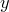
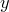

By default, data from files are plotted with points and functions are plotted with lines. However, either kinds of data can be plotted in a variety of ways. To plot a function with points, for example, the following syntax is used†Note that when a plot command contains using, every and with modifiers, the with modifier must come last.:
plot sin(x) with points
The number of points displayed (i.e. the number of samples of the function) can be set as follows:
set samples 100
Likewise, data files can be plotted with a line connecting the data points:
plot 'data.dat' with lines
A variety of other styles are available. The linespoints plot style combines both the points and lines styles, drawing lines through points. Errorbars can also be drawn as follows:
plot 'data.dat' with yerrorbars
In this case, three columns of data need to be specified: the  - and -co-ordinates of each data point, plus the size of the vertical errorbar on that data point. By default, the first three columns of the data file are used, but once again (see Section 2.6), the using modifier can be used:
- and -co-ordinates of each data point, plus the size of the vertical errorbar on that data point. By default, the first three columns of the data file are used, but once again (see Section 2.6), the using modifier can be used:
plot 'data.dat' using 2:3:7 with yerrorbars
More details of the errorbars plot style can be found in Section 4.1.4. Other plot styles supported by PyXPlot are listed in Section 8.19.2, and their details can be found in many Gnuplot tutorials. Bar charts will be discussed further in Section 4.2.
The modifiers pointtype and linetype, which can be abbreviated to pt and lt respectively, can also be placed after the with modifier. Each should be followed by an integer. The former specifies what shape of points should be used to plot the dataset, and the latter whether a line should be continuous, dotted, dash-dotted, etc. Different integers correspond to different styles.
The default plotting style referred to above can also be changed. For example:
set style data lines
would change the default style used for plotting data from files to lines. Similarly, the set style function command changes the default style used when functions are plotted.